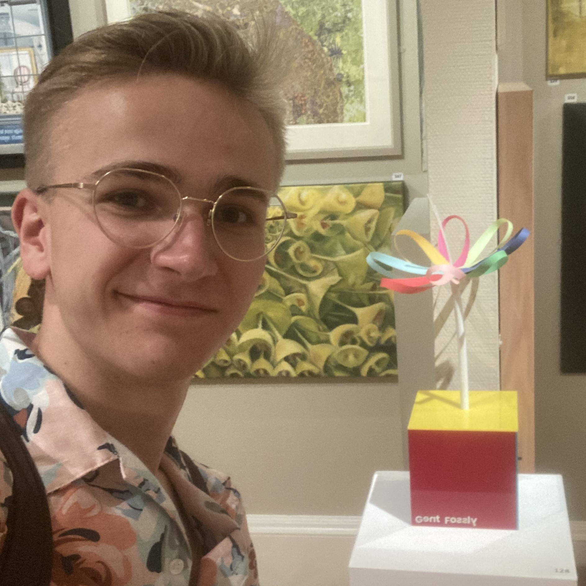

Home
Julius Zajitschek
Designer, artist and aspiring mechanical engineer.
I explore the intersection of engineering, design and visual communication through physical prototypes, technical projects and artwork. Currently taking a gap year before pursuing engineering studies in Germany.
View CVA closer look
Featured Projects
Selected work
Selected Projects
A selection of explorations in making, engineering and visual storytelling.

About
Curious by nature, hands-on by design.
I’m Julius, a designer and artist with a growing interest in mechanical engineering. I enjoy learning by making: turning questions into sketches, prototypes and finished work, and sharing the thinking behind each process.
Engineering & Design
I’m drawn to the way engineering and design come together to solve practical problems. Through CAD, prototyping and experimentation, I explore how thoughtful decisions about form and function can make an idea tangible.
Artistic Practice
My art practice gives me space to investigate material, colour and perspective. I value experimentation and visual communication, and bring that open-ended approach into my technical projects too.
Visit Artist WebsiteContact
Let’s get in touch.
For commissions, collaborations, opportunities or general enquiries, feel free to get in touch.